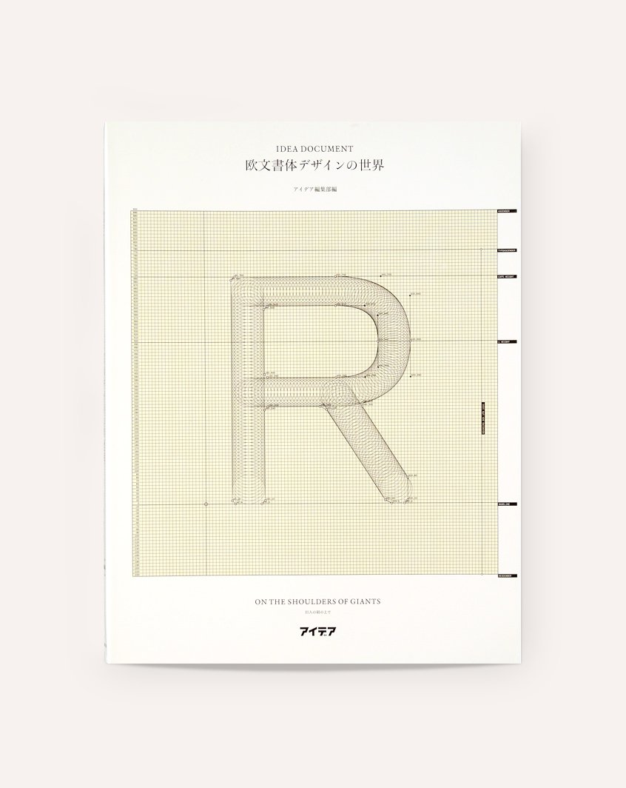
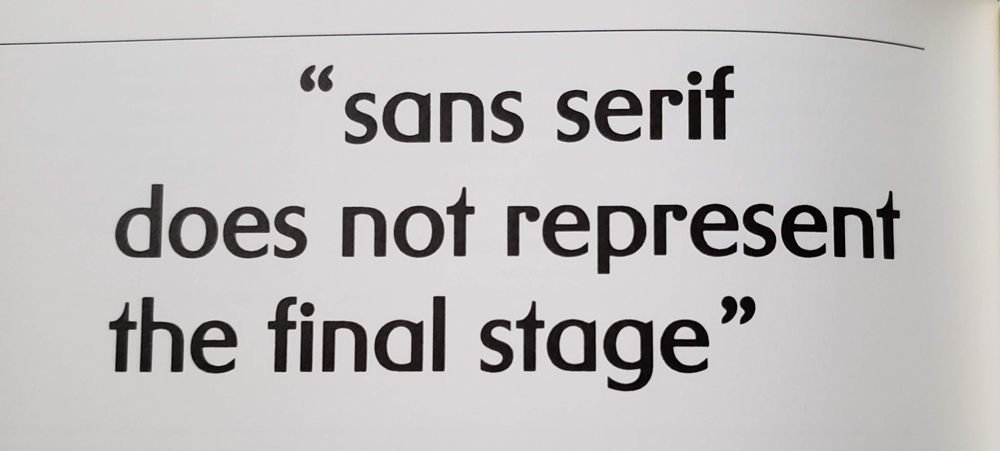
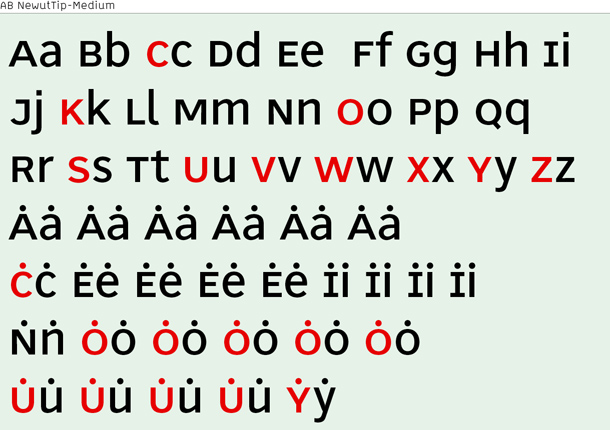
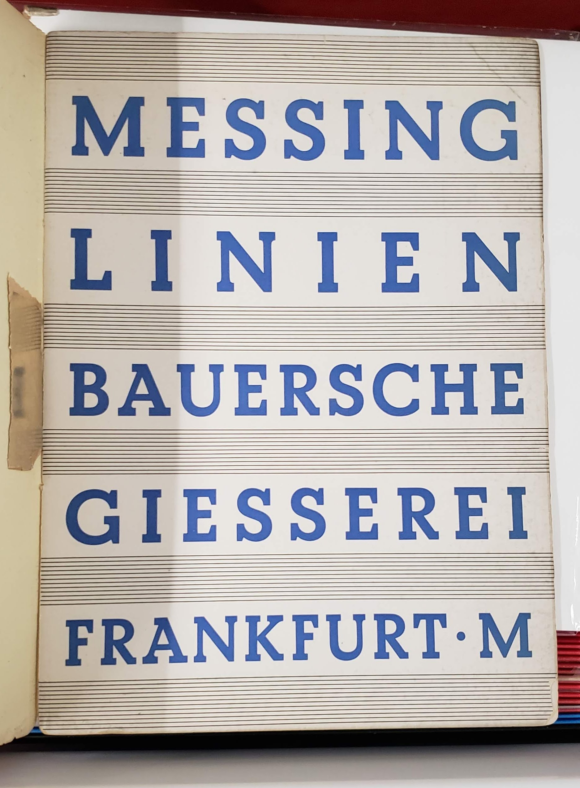
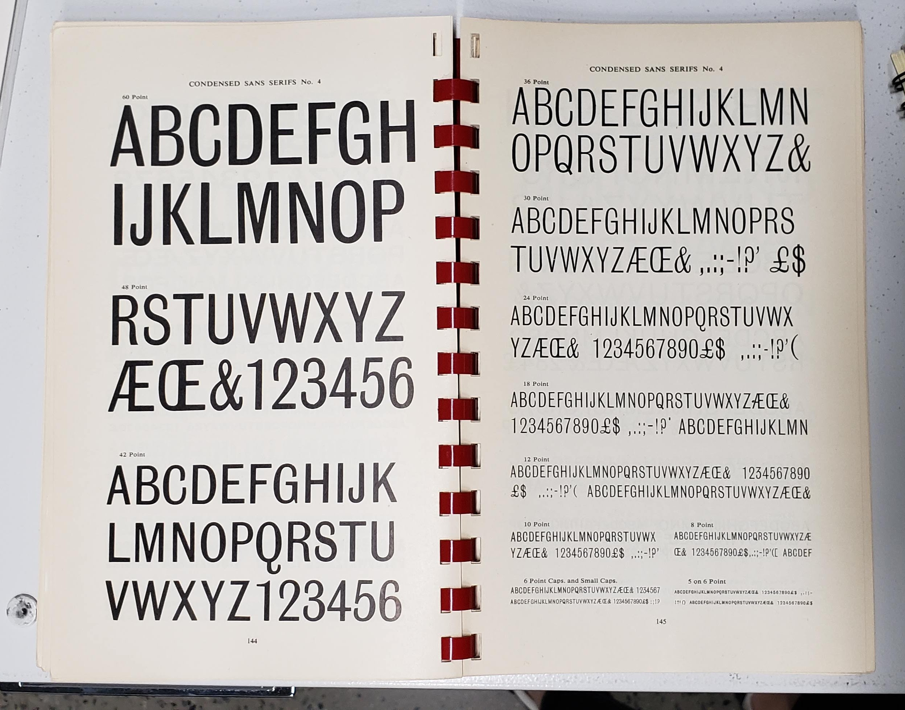
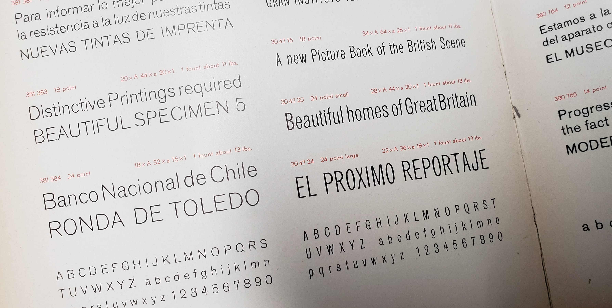
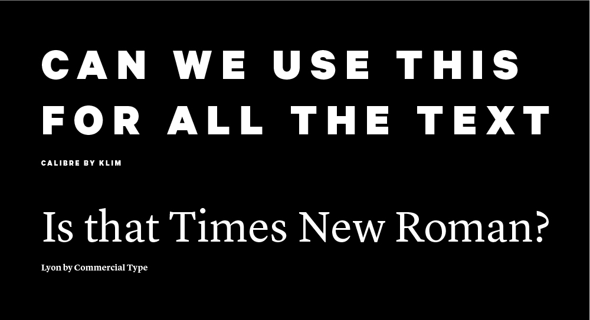
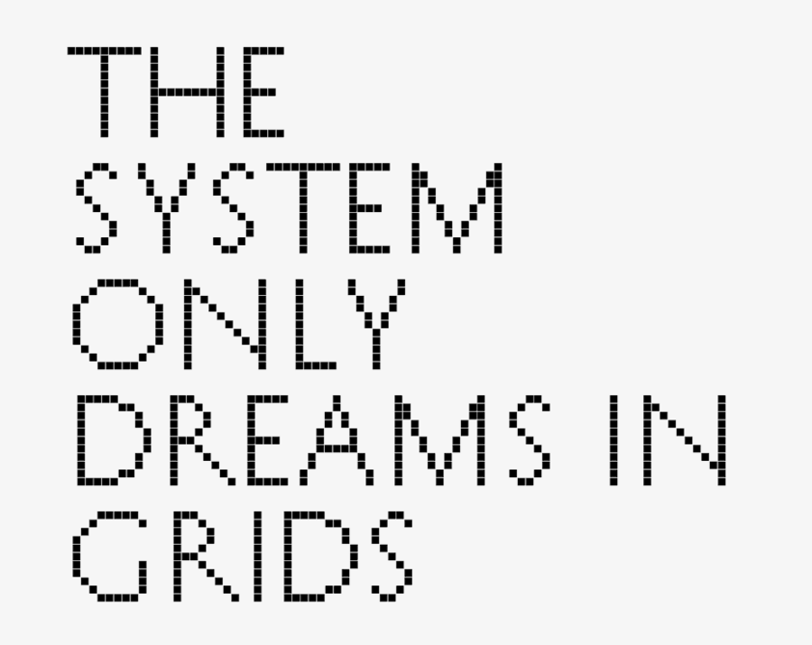

typography / type design
David Berlow on emojis: Berlow talks about how monolinear sans serifs are neutral in their ubiquity across textual communication. Emojis carry expression now. The contrast keeps getting revved up: original black and white emoticons evolving into full color mini-illustrations. Emojis are an interesting development in written communication…
“If a new type doesn’t show your own convictions, what is the point of doing all that work?”
— Gunnlaugur SE Briem

— Stone Drum Script by Wu Changshi, 1915
Wu Changshi was an epigrapher (a scholar of ancient scripts) who considered the seal script (as he replicated above) to be modern. The seal script was one of the earliest Chinese writing systems, and required lengthy study to understand and replicate. Traditional Chinese calligraphy showed the stroke of the brush and had varied stroke weight. The seal script is comparably monolinear, rectilinearly grid-based, and conceals the stroke of the brush tip, as seen in the rounded edges.
These characteristics run parallel to the transition from broad-nib/pointed nib writing to designed serifs then to sans serifs. The study of epigraphy is also similar to the practice and scholarship of reviving old type, wherein studying historical models seems to elevate the credibility of a typeface, just as the study of epigraphy was seen as an elite interest in China…
— Breaking Things Deliberately, Tobias Frere-Jones
A method of authorship is frontloading with your own experiments before projects even exist. That way you have your own repository to pull from, in turn taking it one step further from visual research only composed of other people’s work. Reminds me of when Keetra Dean Dixon came to WashU and spoke about her process. Both designers also show how self-direction prior to entering the commercial workplace is crucial to establishing individual voice, as well as how the past always informs the present.


— pg. 110, quoting Karl Gerstner, set in Gerstner Original
Idea Document: On the Shoulders of Giants: Notable problem is that this features mostly white European guys. But that goes for most type design books. Insightful nonetheless. Learned about Gernster’s font that intends to synthesize serif and sans, as well as André Ballinger’s Newut Tip, which is “an attempt to create a new universal typeface.“
“German texts always had a more ragged grayscale than the Latinate or Anglo-Saxon texts due to many capitalised words. When looking at the German immediately next to the other languages, it always draws slightly more attention visually.” (All nouns in German are capitalized.) Baldinger, (IDEA Document: On the Shoulders of Giants, pg. 104).
The dots stand in for accent marks. Since words are understood in context, the dots work.


— Bauer Beton

— Stephenson & Blake

— Berthold Standard
The Herb Lubalin Study Center is heaven except for the fact that your stay is limited to 2 hours instead of infinity.
It would be cool to make an online archive of type things, but when I reconsidered it, it’s more meaningful to make type that can be used. I’m also considering how type specimen have changed with online storefronts.

Modern Typography — Robin Kinross: Thoughts prompted by pages 10–11: Typographic scholarship is largely motivated by the intent to reproduce and sell typefaces modeled on old ones. Do type designers dig deeper than aesthetics?
What ideologies are we reintroducing, repackaging, reiterating… There’s fun facts, but what about context? Why was the original created in the first place? Does it matter since the connotations of a typeface change based on how they’re used? Do the ideologies of the original designer matter to the contemporary designer? Are contemporary process writings another form of marketing and persuasion?
But does scholarship need to be heightened to make typefaces successful in the market? Nope. And to some, selling is the priority… Can you blame them, considering the speed of society and the long-term process of type design? Are the stakes that high? What are the effects of type on culture, content reception, etc.?
It’s not only about legibility but also about communication and tone. Are the visual qualities of a typeface an argument on their own? An additional voice? Or a characteristic of the whole?
The tricky thing is, the use of a type is not controlled by its designer. Its context is variable. So is an ideology in a face even possible if its use is so varied? What does “authorship” mean in type design?
Modern Typography — Robin Kinross: Thoughts prompted by Chapter 2: Enlightenment Origins
“Modern typography exhibits a rational impulse, both internally in ordering its own working, and externally in the face it presents to the world.”
— pg. 16
“By a typographer, I do not mean a printer, as he is vulgarly accounted, any more than Dr Dee means a carpenter or mason to be an architect: but by a typographer, I mean such a one, who by his own judgement, from solid reasoning within himself, can either perform, or direct others to perform from the beginning to the end, all the handy-works and physical operations relating to typographie.” (Joseph Moxon, Mechanik exercises: or the doctrine of handy-works applied to the art of printing, quoted by Kinross pg. 15).
A typographer is as much as a practitioner as a reasoner, and these things can be taught. Typography is based in reason and rational thought, but it is not a science.
— romain du roi italic

Romain du roi introduced units for different body sizes and using the grid. It represents the move toward rationalization and order, and anticipates pixels and how fonts are constructed today (a fine grid of points).
A possibly incorrect assumption of mine: Italics are rooted in handwriting, so what happens when you try to apply that to a grid? An effect of rectilinear units and coordinates is that it leads to sloped romans instead of true italics, which precedes the oblique styles of sans serifs.
Chapter 3: The Nineteenth-Century Complex: Printing was full of working-class labor, roots of underserved, arduous workers:
“They quit, they cheated on their ‘voyage’; they collected small advances on the next week’s work (‘salé’) and then disappeared; and sometimes they spied for rival publishers or the police.” (p.27, Kinross quoting historian of book production in 18th century France). A reminder that things were way more intense back then.
Hard labor motivated workers to take shortcuts to make the work easier, not dissimilar to type designers today using programming and scripting to automate tedious and repetitive processes. Some say it allows more time to be allotted toward designing instead of pixel pushing.
Chapter 4: Reaction and Rebellion:
“The idea of freedom (‘as having skilled and unaffected boldness’) was essential to [Edward Johnston], as was that of constraint: ‘True spontaneity, however, seems to come from working by rule, but not being bound by it’…‘Set no limit to your hopes (which may contemplate Eternity) but every limit of the moment to your work’”
— pg. 39
10,000 Original Copies: Kris Sowersby argues that every interpretation of a preceding typeface is an iteration upon an idea that moves it forward and situates it in today’s world. Type design is a gradual improvement, moving at the pace of culture and the market. Originality is a false goal. New technologies expand the possible uses of a typeface, but the forms themselves are simply shapes. How is authorship present in type design? What makes a typeface more than a forgery? How is it different from Mona Lisa duplicates?
Typefaces aren’t merely facsimiles: well-done ones reflect the designer’s ideologies, their knowledge of history, and their craftsmanship.

The Gutenberg Galaxy: The Making of Typographic Man — Marshall McCluhan
“By the same process whereby he spins language out of his own being, he ensnares himself in it; and each language draws a magic circle round the people to which it belongs, a circle from which there is no escape save by stepping out of it into another.”
— Wilhelm von Humboldt
Learning different languages—linguistic, visual, etc.—enables comparison to one’s defaults (more perspective).
“By the meaningless sign linked to the meaningless sound we have built the shape and meaning of Western man.”
— Marshall McCluhan
The alphabet is completely abstract, yet it’s the reason why anything is possible at all.

— MEEK Typographic Synthesizer
PEOPLE music gathering and website: “Music is for everyone.” A non-hierarchical, non-commercial digital space for artists (mostly musicians) to upload and update unfinished work. Includes some background information on when and where the pieces started.
Note the language: people instead of solo artists, projects instead of bands—reflects the in-progress work (or past sketches) but also the ideology of PEOPLE.
Also note the typography: monospace and all caps of PEOPLE representing equality.
The gathering itself is unscheduled and spontaneous “performances” consist of in-progress work developed during the gathering.
More insight in TCI interviews:
“You look at our capitalist society and people who are so enthralled with themselves and their own stories because they’re afraid to die. They’re afraid to stop expanding … You don’t need to expand, you don’t need to become Walmart.”
— Bon Iver
— Nordvest by Nina Stössinger, a text typeface with heavier horizontals
Constrasting with Convention — Nina Stössinger: Isolating verticals and horizontals. Difference between convention and truth. One of the first moments of Nordvest’s basis also came from Nina “misusing” a pointed pen.
Is a result from “incorrectly” using a tool invalid if it does not follow convention or the tool’s original intent?
— Tool controlling designer vs. designer controlling tool

I was creating a flyer for a student group and one of the group members thought the serif I used was Times New Roman. When I said it wasn’t, she immediately retracted her dissatisfaction. What does that mean?
She loved the all caps, tracked out, bold geometric sans though.
— NON Dit-Dah font
Formist is releasing limited edition fonts in a series called NON. The types are intended to “form a new universal language,” which kind of doesn’t make sense if the font is limited to 10 copies… and because the letters are also not legible. In any case, a universal language is not achievable. Right now. Well actually it’s not immediately legible but you could learn how to read it… It’s not dissimilar to cuneiform or hangul. It’s alt-English.
Dit-Dah is based on the forms of morse code, and its dot/line modules were used to construct approximations of letterforms. “This system simultaneously acknowledges both the written letterform and transmitted code form, and in turn, forms a third abstracted universal language.”
Not sure how I feel about the idea of a limited edition font. It’s kind of breaking my brain to think about it and the physics of digital “material.”

— image idea, set in History
The forms are based on Roman proportions. Captures atom ≠ pixel, translation from physical form to digital format.
Phrase is a rehash of The National’s album title The System Only Dreams in Darkness. The internet is a bunch of rectangles.

— prototype site
I made another CSS typeface, though there’s not really much attention paid to interaction (though that’s not really the point of this). I want to figure out how this thing can actually be typed in its animated form. I don’t think it’s possible with current font technology; it’d be more of a browser hack. Right now it’s just key presses changing opacity.